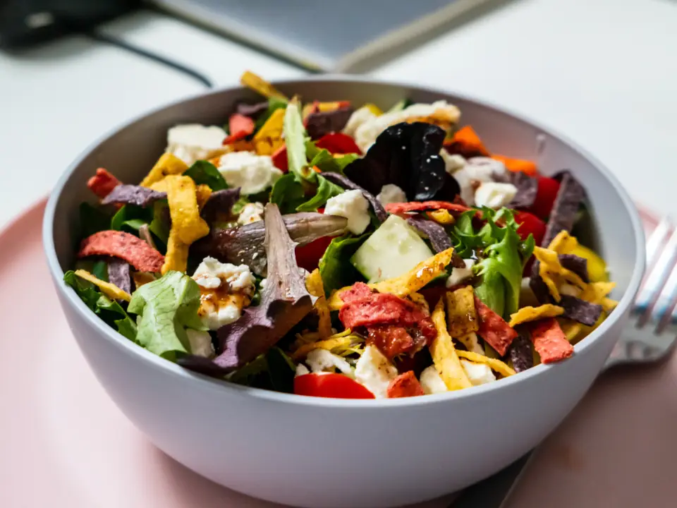
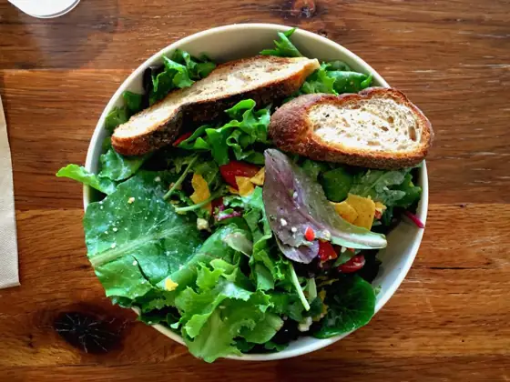
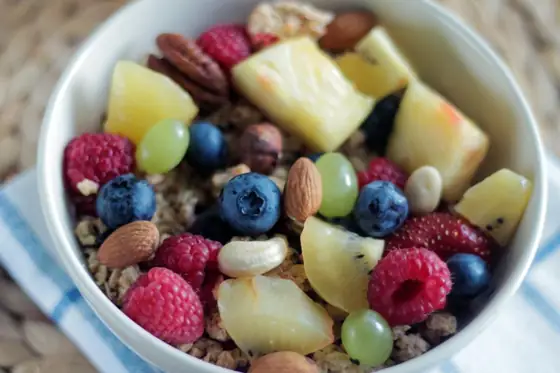
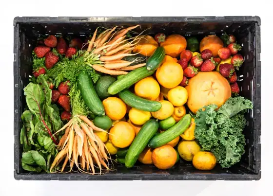
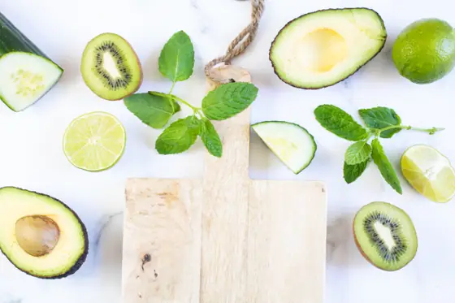
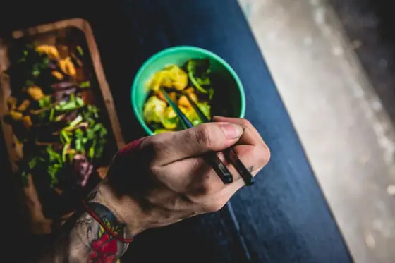

Esencial
$38.000/mes
- 1 consulta mensual
- Plan y lista del súper
- Recetario digital
Nutrición clínica y deportiva · Buenos Aires
Un plan hecho para tu vida real —tu horario, tu presupuesto, tu familia— con una nutricionista que te acompaña por WhatsApp entre consultas.

60 minutos: hábitos, análisis clínicos si los tenés, objetivos y gustos. Sin balanza si no querés.
Menú flexible de 2 semanas, lista del súper y recetas. Nada de pesar cada gramo.
Fotos de tus comidas por WhatsApp, control cada 3–4 semanas y cambios cuando tu vida cambia.
Test · 1/3
Herramienta
Elegí una comida y mirá cómo lo armaríamos. Es la base que después ajustamos a tu objetivo.
Esencial
$38.000/mes
Acompañamiento · el más elegido
$62.000/mes
Deportivo
$74.000/mes
Precios de ejemplo en ARS · factura para reintegro de prepagas

15 min · almuerzo

5 min · desayuno

guía · súper

10 min · merienda

“Dejé de hacer dietas en enero. Bajé 8 kilos en el año y, lo mejor, dejé de pensar en comida todo el día.”
Lucía, 38 · plan Acompañamiento · testimonio de ejemplo
“Mis análisis mejoraron en tres meses y sigo comiendo asado los domingos.”
Martín, 52 · testimonio de ejemplo
Damos factura para que pidas reintegro. Muchas prepagas reintegran entre el 40 y el 70 %.
Las dos cosas: consultorio en Palermo y videollamada para todo el país.
Sí, con control de B12, hierro y proteína.
Armamos el plan con opciones de compra lista y viandas. Cero culpa.